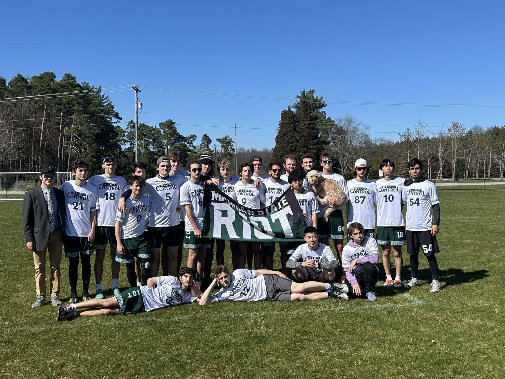

I guess we'll start with the very beginning of the day.
- Wake up to morning alarm
- Check phone for notifications, answer any pressing texts or messages
- Get out of bed, head to the bathroom-
What, what, what, too boring for ya? Moving too slow? ALright alright, we can speed things up I guess. Geez, so particular.
The abbreviated version then:
- Wake up, do morning ritual
- Determine if I need to pack food or extra items for the day
- Eat breakfast!
- Pack up laptop and necessary items
- Throw on shoes
- Forget there were more items in my room that I needed to grab before walking out the door
- Go and grab items that I initially forgot
- Finally get out the door, with shoes on, and head down to the bike rack, where I will then bik to class.
Look at that, we're finally out the front door. Who would have thought. In reality, this takes anywhere from 20 minutes, to 45, depending on where I'm going, and what the day is like. Somtimes I shower before class, other times I leave that for after work because of the labor and details of my job. Regardless of the day though, I always have a bag on my back, hopefully a pep in my stride, and ready to get the day started, no matter how much caffine I'm going to need to get myself through the day.

Published:09/23/2025
Author: Tristan Bakker
Michigan State's Ultimate Frisbee Club
Ultimate frisbee is a sport about moving a flying disc down a field and attempting to throw a pass into an endzon for a score, much like Football. There is no walking with the disc allowed, and the sport is non-contact, much like basketball. Players fly around the field, making athletic plays to either catch the disc or prevent the other team from doing so. A culmination of many sports in one with a very different object of attention, and you have a sport that involves some very impressive things.
But how well does Michigan State perform at this sport? Well, the score from last year's sectional tournament tells a good story, even without many words.
| Game Matchup |
Riot Score |
Opposing Team Score |
| Riot vs. C.Bots |
15 |
4 |
| Riot vs. Camo B |
15 |
6 |
| Riot Vs. Ctrl Z |
15 |
12 |
| Riot vs. Illinois B |
15 |
13 |
As you can see, Riot, our B team, has had some great success last year.
We went on to take 3rd place last year at our final tournament, where these scores come from. We even won a full tournament earlier in the year, going undefeated at said tournamnet acgainst 6 different teams. It was the best performance our team has ever shown, and we are just getting started. We can't wait to get back out onto the field once again this upcoming year, and really show everyone who we are.
Beacuse we: Are Spartans

Published:09/29/2025
Author: Tristan Bakker